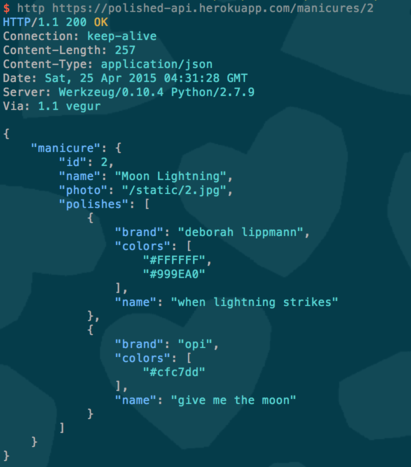
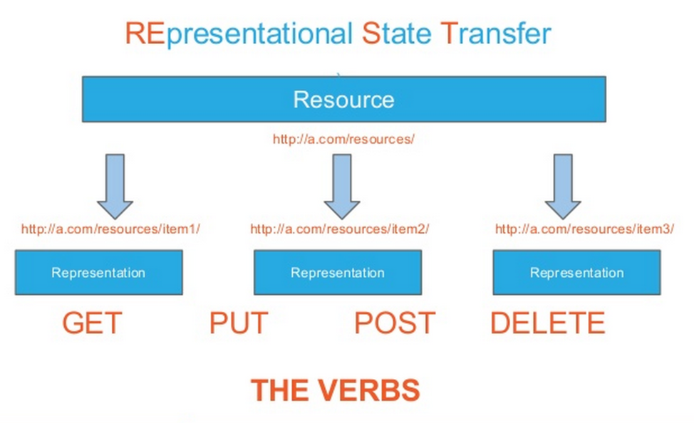

Building a REST API with Flask and Python
Goal
Quickly create a deployed REST API and a basic front end app to consume.
Result
|  |  |
| 4h | 1h |
REST
 source: http://www.slideshare.net/Solution4Future/python-restful-webservices-with-python-flask-and-django-solutions
Flask

Routing
- match a URL with HTTP method(s) and handler
- returns a HTTP response and status code
Decorators
- a function that creates a wrapper around another function
- returns a new function that is the same as before but with extra processing
Routing with Decorators!
The code!
https://github.com/cy/polished-api/
import os
from flask import Flask, jsonify, Response, abort, request, make_response
import json
from functools import wraps
import dicttoxml
import xml.dom.minidom as minidom
from flask.ext.cors import cross_origin, CORS
app = Flask(__name__)
cors = CORS(app, resources={r"/manicures/*": {"origins": "*"}})
manicures = [
{
'id': 1,
'polishes': [{'brand': 'essie', 'name': 'mint candy apple', 'colors': ['#A4D9D0']}],
'photo': '/static/1.jpg',
'name': 'Slightly Chipped Mint Candy Apple',
},
{
'id': 2,
'polishes': [
{'brand': 'deborah lippmann', 'name': 'when lightning strikes', 'colors': ['#FFFFFF', '#999EA0']},
{'brand': 'opi', 'name': 'give me the moon', 'colors': ['#cfc7dd']},
],
'photo': '/static/2.jpg',
'name': 'Moon Lightning'
}
]
def select_response_format(func):
"""
Decorator that responds with either XML or JSON (default) depending on Accept header.
"""
@wraps(func)
def wrapper(*args, **kwargs):
data = func(*args, **kwargs)
mimetype = request.headers.get('Accept', '*/*')
if "xml" in mimetype:
data = dicttoxml.dicttoxml(data, attr_type=False, root=False)
else:
data = json.dumps(data)
mimetype = "application/json"
return Response(data, mimetype=mimetype)
return wrapper
@app.route('/manicures', methods=['GET'])
@cross_origin()
@select_response_format
def get_manicures():
return {'manicures': manicures }
@app.route('/manicures/', methods=['GET'])
@cross_origin()
@select_response_format
def get_manicure(manicure_id):
for m in manicures:
if m['id'] == manicure_id:
return { 'manicure': m }
abort(404)
@app.route('/manicures', methods=['POST'])
@select_response_format
def create_manicure():
#pdb.set_trace()
if not request.json or not 'name' in request.json:
abort(400)
manicure = {
'id': manicures[-1]['id'] + 1,
'name': request.json['name'],
'polishes': request.json.get('polishes', []),
'photo': request.json.get('photo', '')
}
manicures.append(manicure)
print manicures
return {'manicure': manicure}
@app.route('/manicures/', methods=['PUT'])
@select_response_format
def update_manicure(manicure_id):
for m in manicures:
if m['id'] == manicure_id:
m['name'] = request.json.get('name', m['name'])
m['polishes'] = request.json.get('polishes', m['polishes'])
m['photo'] = request.json.get('photo', m['photo'])
return { 'manicure': m }
abort(400)
@app.route('/manicures/', methods=['DELETE'])
@select_response_format
def delete_manicure(manicure_id):
for m in manicures:
if m['id'] == manicure_id:
manicures.remove(m)
return { 'result': 'deleted' }
abort(400)
@app.errorhandler(404)
def not_found(error):
return make_response(jsonify({'error': 'Not found'}), 404)
if __name__ == '__main__':
port = int(os.environ.get("PORT", 5000))
app.run(host='0.0.0.0', port=port)